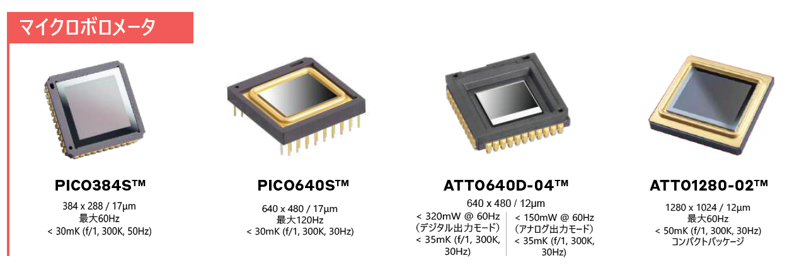

赤外線カメラの「2大勢力」を知る
冷却型 (Cooled)
センサーを-200°C近くまで冷やし、ノイズを極限まで排除。数km先の微かな熱源を捉える「ガチ」な用途（宇宙・軍事）向け。
非冷却型 (Uncooled)
冷やさずに動作。小型・軽量・低価格で、車載ナイトビジョンや工場点検、体温測定など「暮らしを支える」用途に最適。

ATI シリーズ
ATIは「センサー」ではありません。脳（画像処理エンジン）を備えた「完成モジュール」です。
通常のセンサーは生のデータを出力しますが、ATIは内部で画像補正を済ませた「綺麗な映像」を即座に出力します。12μmピッチの微細化により、超小型化（SWaP）を実現しました。

MCT シリーズ
「見えないはずの遠く」をクッキリ映し出す最高峰。
液体窒素レベルで冷却し、自己ノイズを消し去ることで圧倒的な感度を誇ります。宇宙観測や、数km先のガス漏れを見つけるためのMWIR（中波長）における決定版です。

InGaAs シリーズ
温度ではなく、物質の「質」を見抜く目。
可視光に近い「短波長赤外線（SWIR）」を利用。シリコンを透かして半導体の中を見たり、水分の吸収の違いで食品の傷みを見分けたりします。300Hzの超高速駆動が自慢です。

IGN シリーズ
HOT（Higher Operating Temperature）ディテクタ
従来の冷却型センサーの常識を打ち破る、動作温度「-120℃（150K）」を実現。 冷却負荷の低減により、装置の劇的な小型化とメンテナンス周期の長期化を両立しました。 圧倒的な低消費電力でありながら、最高クラスの熱感度を維持しています。
【主な用途】
- 広域監視：国境や沿岸など、数km先の熱源を24時間捉え続ける長距離監視。
- 航空機・ドローン：小型・軽量化が求められる空中からの偵察・救助。
- 産業ガス検知：肉眼では見えない微細なガス漏れの可視化。
【HOT技術が選ばれる理由】
最大の特徴は「運用の効率化」です。動作温度を-120℃まで引き上げたことで、冷却機の負荷が激減。 メンテナンスサイクルが従来の2倍以上に向上し、運用のダウンタイムとコストを最小限に抑えます。 また、迅速な起動速度は、一刻を争う現場での即応性を担保します。

マイクロボロメーター
非冷却赤外線の心臓部。熱を「抵抗値」に変える素子。
かつて45μmだった画素は今や12μmへ。微細化により、カメラを小型化しつつHD画質を実現しました。車の自動運転や工場での異常発熱チェックを支える「魔法の目」の正体です。
赤外線技術が暮らしを支える
技術革新（微細化・アルゴリズム進化）により、かつては巨大で冷却が必要だったカメラが「小さく・安く（SWaP）」なりました。今や赤外線は、自動運転やガス漏れチェック、食品検査など、あらゆる産業DXの現場で活躍しています。